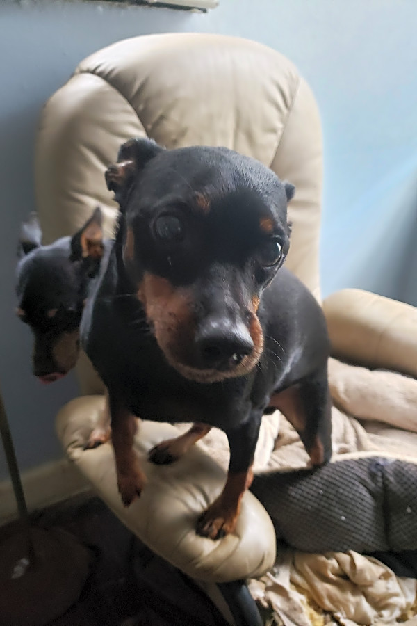
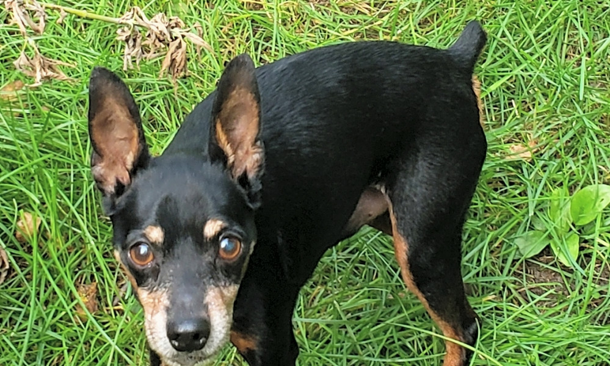

4 Lovable Pups to Adopt Now in Detroit
(Credit: Petfinder)
Interested in adopting a pet or just looking at some lovable pups up for adoption? There are dozens of darling dogs up for adoption at animal shelters in and around Detroit.
Animal shelters and pet rescue groups work hard to care for unhoused pets and connect them to loving homes. Hoodline used data from Petfinder to power this roundup of dogs currently available for adoption.
(Details like pet availability, training, vaccinations and other features are based on data provided by Petfinder and may be subject to change; contact the shelter for the latest information.)
Scoppy, miniature pinscher mix

Scoppy is a darling male miniature pinscher mix being cared for at What We Do For The Love Of Pets.
Scoppy will get along great with your other dogs. His ideal forever-home would be a cat-free environment. Scoppy would prefer a home without small children. He’s mastered his house-training etiquette. He’s neutered and he has had all his shots.
Scoppy’s current caretakers say:
“This sweet boy lost his owner. He is bonded with his father. They need to be adopted together. He thinks he is a lap dog.”
Read more about Scoppy on Petfinder.
Key Key, miniature pinscher

Key Key is a sweet male miniature pinscher dog currently housed at What We Do For The Love Of Pets.
Key Key is looking for a home without small children. He is neutered and he has had all his shots. Good news: He is already house-trained.
Read more about how to adopt Key Key on Petfinder.
Sheba, German shepherd
Sheba is a charming female German shepherd dog currently housed at Rebel Dogs Detroit.
Sheba loves to socialize and other dogs. She has had all her shots. She is already house-trained.
Here’s what Sheba’s friends at Rebel Dogs Detroit think of her:
“Sheba is a gorgeous, four-year old German Shepherd and recently recovered from a terrible skin infection. Sheba likes to play with other dogs, but can be reactive on the leash. This is a highly trainable trait and she otherwise walks fine. Sheba will walk around with a tennis ball in her mouth constantly. She loves to fetch and other games. Sheba is still a little nervous and would love a family who have plenty of time to spend with her and are able to reassure her she is a gem. She warms quickly up to new people and is ready for family life.”
Read more about Sheba on Petfinder.
Harry, Shih Tzu and poodle mix
Harry is a male Shih Tzu and poodle mix in the care of Home Fur-Ever.
Harry loves other dogs. He’s vaccinated and neutered.
Here’s what Harry’s friends at Home Fur-Ever think of him:
“Harry was an owner -surrender along with another dog from someone who was not around to give the dogs the attention and care they deserved. He is a very sweet dog that is ready to find his new forever family. Harry would love a home where someone can be home to spend time with him and take him for daily walks and get lots of love and attention. He’s affectionate, loving and enjoys snuggling up next to you but also enjoys playing with his ball and chewing on his bones. His estimated birth date is September 30.”
Read more about Harry on Petfinder.
This story was created automatically using local animal shelter data, then reviewed by an editor. Click here for more about what we’re doing. Got thoughts? Go here to share your feedback.